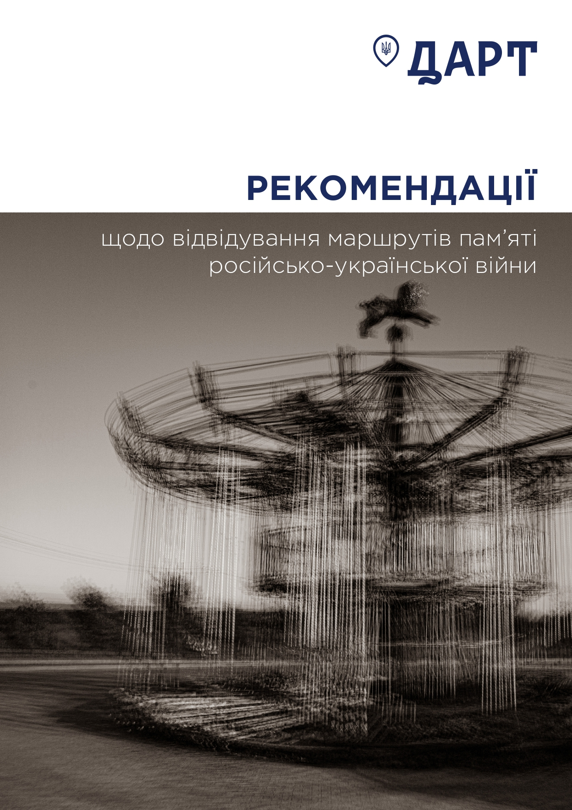
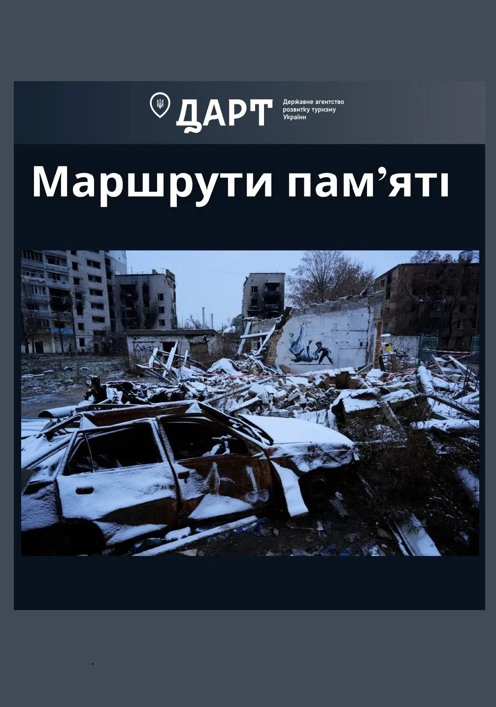
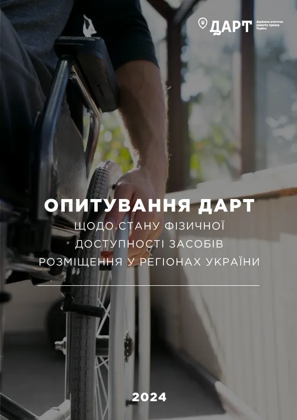
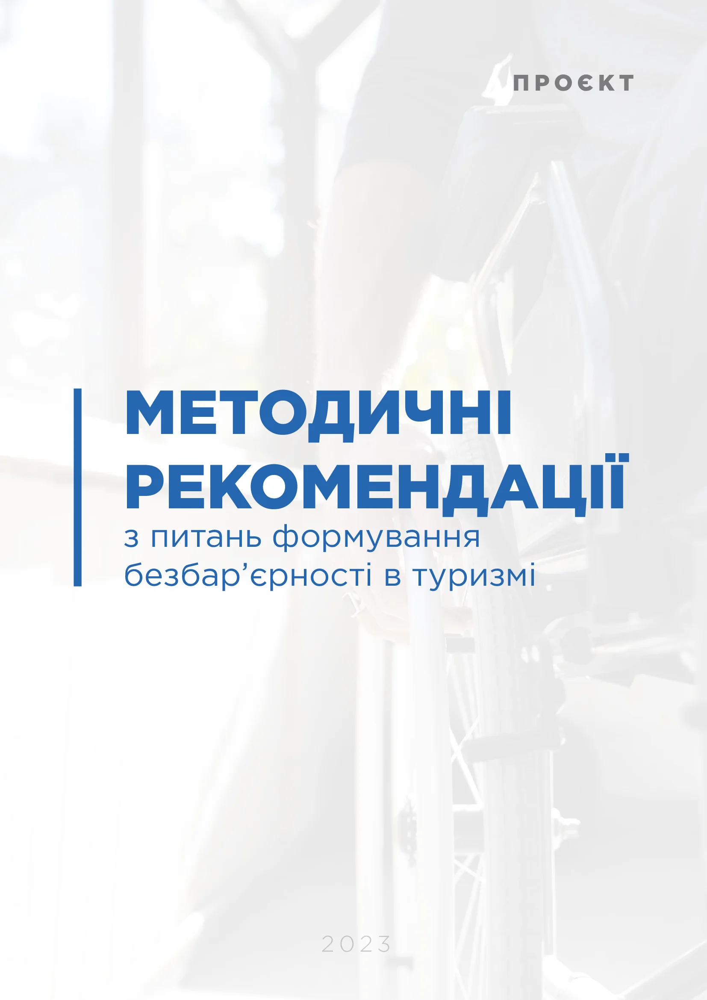
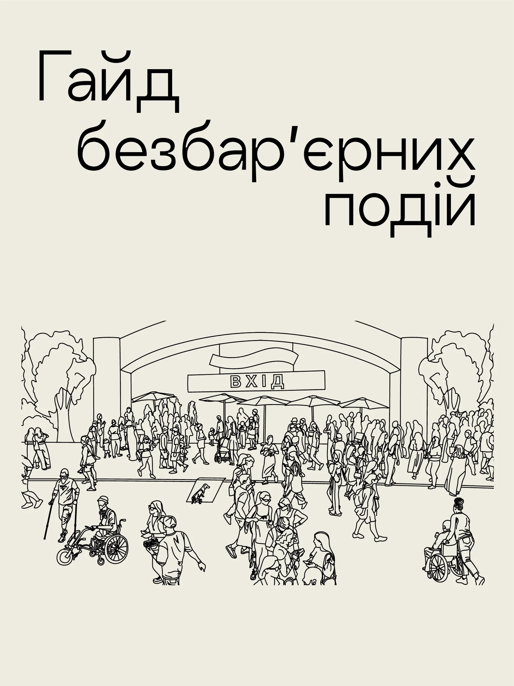
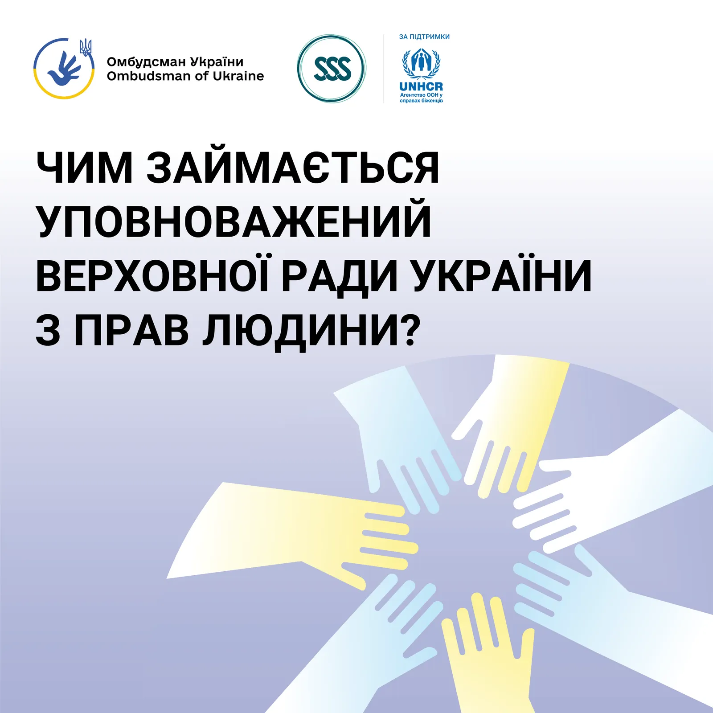
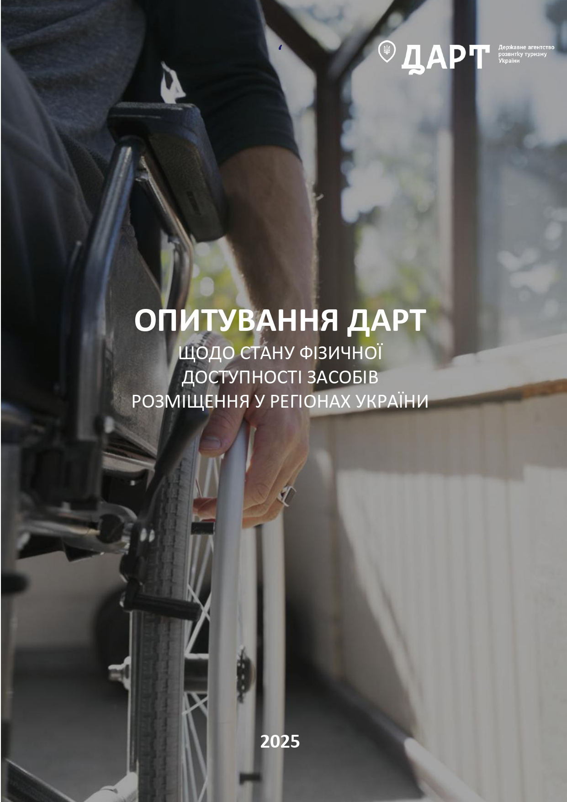

Інформація для громадськості
Постанова Про внесення змін у додаток до постанови Кабінету Міністрів України від 24 лютого 2022 р. № 153
Пояснювальна записка до проєкту постанови Кабінету Міністрів України «Про внесення змін у додаток до постанови Кабінету Міністрів України від 24 лютого 2022 р. № 153
Пояснювальна записка до проєкту постанови Кабінету Міністрів України «Про внесення змін у додаток до постанови Кабінету Міністрів України від 24 лютого 2022 р. № 153
Доступ до публічної інформації
Порядок складання та подання запиту на інформацію:
- Запит на інформацію, розпорядником якої є ДАРТ, може бути поданий:
на поштову адресу: 01001, м. Київ, вул. Прорізна, 2;
на електронну адресу: dart@tourism.gov.ua; - Запит на інформацію, розпорядником якої є ДАРТ, може бути подано запитувачем особисто за адресою:
вул. Прорізна, 2, м. Київ, 01001 (скринька розміщена на першому поверсі приміщення у доступному для громадян місці). - У формі запиту зазначається інформація про запитувача та спосіб надання інформації з проставленням знаку "+" або"-".
- Відповідь на запит на інформацію надається у спосіб, обраний запитувачем, протягом п'яти робочих днів з дня надходження запиту.
- У разі коли запит стосується надання великого обсягу інформації або потребує пошуку інформації серед значної кількості даних, строк розгляду запиту може бути продовжено до 20 робочих днів з обґрунтуванням такого продовження. Про продовження строку запитувачу повідомляється в письмовій формі не пізніше ніж протягом п'яти робочих днів з дня надходження запиту.
- Інформація на запит надається безкоштовно . У разі якщо задоволення запиту на інформацію передбачає виготовлення копій документів обсягом більш як 10 сторінок, запитувач зобов'язаний відшкодувати фактичні витрати на копіювання та друк.
- Запит на інформацію повинен містити:
прізвище, ім’я, по батькові, (найменування) запитувача, поштову адресу або адресу електронної пошти, а також номер засобу зв’язку (якщо такий є);
загальний опис інформації або вид, назву, реквізити чи зміст документа, щодо якого зроблено запит (якщо запитувачу це відомо);
підпис і дату (за умови подання письмового запиту). - Датою подання електронного запиту на отримання публічної інформації є дата його надходження на визначену електронну адресу або дата надходження електронної форми. Якщо електронний запит на отримання публічної інформації надійшов на визначену електронну адресу у неробочий день та час, датою подання електронного запиту на отримання публічної інформації вважається наступний після нього робочий день. Застосування кваліфікованого електронного підпису під час надсилання електронного запиту на отримання публічної інформації запиту не вимагається.
- Запит на інформацію подається у довільній формі або за примірною формою, а також використати форму, яка розміщена на офіційному вебсайті ДАРТ.

Дякуємо за Ваш запит. Відповідь буде надано в терміни згідно з чинним законодавством
Щось пішло не так. Ми вже працюємо над цим. Спробуйте повторити трохи пізніше.

РЕКОМЕНДАЦІЇ щодо відвідування маршрутів пам'яті російсько-української війни

Маршрути пам'яті

Методичні рекомендації для суб'єктів, які провадять туристичну діяльність, фахівців туристичного супроводу щодо надання інформації в доступних для осіб з інвалідністю форматах

Опитування ДАРТ щодо стану фізичної доступності засобів розміщення у регіонах України

Формування безбар'єрного простору в туризмі

Інтерактивний гайд безбар'єрності

Уповноважений ВРУ по правам людини

Опитування ДАРТ щодо стану фізичної доступності засобів розміщення у регіонах України - 2025
У зв'язку із введенням воєнного стану в Україні Указом Президента від 24 лютого 2022 року #64/2022 «Про введення воєнного стану в Україні», запровадженого Законом України «Про затвердження Указу Президента України «Про введення воєнного стану в Україні» від 24 лютого 2022 року #2102-ІХ та з метою убезпечення персональних даних, доступ до деяких даних обмежено на період воєнного стану в Україні.
Ліцензійний реєстр суб'єктів туроператорської діяльності
Реєстр міститься за посиланням: https://cutt.ly/vww8sbQz
Нагадуємо, що згідно із Законом «Про ліцензування видів господарської діяльності», потрібно у письмовій формі повідомляти органу ліцензування про всі зміни даних, які були зазначені у його підтвердних документах, що додавалися до заяви про отримання ліцензії, не пізніше одного місяця з дати набуття таких змін.
Документи (супровідний лист та підтвердні документи) надсилати у паперовому вигляді на адресу: 01001, м. Київ, вул. Прорізна, 2 чи в електронному вигляді на адресу: adminservice@tourism.gov.ua.
Детальніше з інформацією щодо умов ліцензування, змін, видачі, анулювання, зупинення, звуження та розширення дії ліцензії можна ознайомитись у розділі «Ліцензування туроператорів».
Реєстр свідоцтв категоризованих готелів
Реєстр свідоцтв категоризованих готелів знаходиться за посиланням: https://cutt.ly/1wuXoCaF
Детальніше з інформацією щодо умов надання категорій засобам тимчасового проживання можна ознайомитись у розділі «Категоризація готелів»
Особистий прийом громадян в Державному агентстві розвитку туризму України
Особистий прийом громадян в умовах воєнного стану
У зв’язку із введенням з 24.02.2022 року в Україні воєнного стану, на можливість реалізації окремих прав заявників можуть вплинути встановлення посиленої охорони та особливого режиму роботи органу влади, встановлення особливого режиму в’їзду і виїзду, обмеження свободи пересування, а також руху транспортних засобів. З огляду на впровадження таких та інших безпекових заходів права заявників на особистий прийом керівниками та іншими посадовими особами органів державної влади, право бути присутнім при розгляді заяви чи скарги тощо можуть зазнати обмежень.
З урахуванням вищевикладеного та у зв’язку із відсутню укриття в адміністративній будівлі де знаходиться Державне агентство розвитку туризму України, куди під час проведення особистого прийому могли б пройти громадяни при оголошенні сигналу «Повітряна тривога», повідомляємо, що особистий прийом громадян в Державному агентстві розвитку туризму тимчасово припинено.
Додатково зазначаємо, що громадяни, які бажають звернутись до Державного агентства розвитку туризму, можуть надсилати письмові звернення:
на поштову адресу: 02001, м. Київ, вул. Прорізна 2;
на адресу електронної пошти: dart@tourism.gov.ua
подати усне звернення за допомогою засобів телефонного зв’язку: (044) 278-08-08
Графік роботи для подання усних звернень:
Дні прийому
Години прийому
понеділок-четвер
з 9:30 до 17:30
п’ятниця
з 9:00 до 16:45
субота-неділя
вихідні дні
Обідня перерва з 13:00 до 13:45
Звернення громадян
Громадяни України, згідно Закону України "Про звернення громадян", мають право звернутися до органів державної влади, місцевого самоврядування, об'єднань громадян, підприємств, установ, організацій незалежно від форм власності, засобів масової інформації, посадових осіб відповідно до їх функціональних обов'язків із зауваженнями, скаргами та пропозиціями, що стосуються їх статутної діяльності, заявою або клопотанням щодо реалізації своїх соціально - економічних, політичних та особистих прав і законних інтересів та скаргою про їх порушення.
Державне агентство розвитку туризму України в межах визначених законодавством повноважень здійснює кваліфікований, неупереджений, об'єктивний і своєчасний розгляд звернень громадян з метою оперативного вирішення порушених у них питань, задоволення законних вимог громадян, поновлення порушених конституційних прав та запобігання в подальшому таким порушенням.
Нормативно-правові акти
Вимоги до звернення
У зверненні має бути зазначено прізвище, ім’я, по батькові, місце проживання громадянина, викладено суть порушеного питання, зауваження, пропозиції, заяви чи скарги, прохання чи вимоги. Письмове звернення повинно бути підписано заявником (заявниками) із зазначенням дати. В електронному зверненні також має бути зазначено електронну поштову адресу, на яку заявнику може бути надіслано відповідь, або відомості про інші засоби зв’язку з ним.
Звернення, оформлене без дотримання зазначених вимог, повертається заявнику з відповідними роз'ясненнями не пізніш як через десять днів від дня його надходження, крім випадків, передбачених частиною першою статті 7 Закону України "Про звернення громадян".
Звернення, оформлене без дотримання зазначених вимог, повертається заявнику з відповідними роз'ясненнями не пізніш як через десять днів від дня його надходження, крім випадків, передбачених частиною першою статті 7 Закону України "Про звернення громадян".
У разі якщо звернення не містить даних, необхідних для прийняття обґрунтованого рішення органом чи посадовою особою, воно в той же термін повертається громадянину з відповідними роз’ясненнями.
Письмове звернення без зазначення місця проживання, не підписане автором (авторами), а також таке, з якого неможливо встановити авторство, визнається анонімним і розгляду не підлягає.
Термін розгляду звернень громадян
Звернення розглядаються і вирішуються у термін не більше одного місяця від дня їх надходження, а ті, які не потребують додаткового вивчення, – невідкладно, але не пізніше п’ятнадцяти днів від дня їх отримання. Якщо в місячний термін вирішити порушені у зверненні питання неможливо, керівник відповідного органу, підприємства, установи, організації або його заступник встановлюють необхідний термін для його розгляду, про що повідомляється особі, яка подала звернення. При цьому загальний термін розв'язання питань, порушених у зверненні, не може перевищувати сорока п’яти днів.
На обґрунтовану письмову вимогу громадянина термін розгляду може бути скорочено.
Звернення громадян, які мають встановлені законодавством пільги, розглядаються у першочерговому порядку.
Подати звернення
Ви можете надіслати письмове звернення:
На поштову адресу: вул. Прорізна, 2, м. Київ, 01001
Електронною поштою: dart@tourism.gov.ua
або подати усне звернення:
за допомогою засобів телефонного зв'язку: (044)278-08-08
На поштову адресу: вул. Прорізна, 2, м. Київ, 01001
Електронною поштою: dart@tourism.gov.ua
або подати усне звернення:
за допомогою засобів телефонного зв'язку: (044)278-08-08
Розгляд звернень регулюється положеннями Закону України "Про звернення громадян"